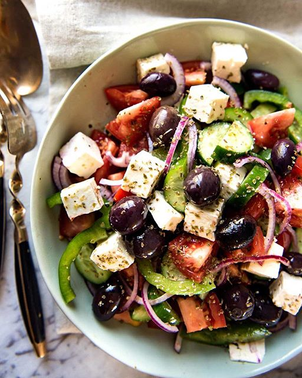

Greek Caprese Salad

Refreshing Greek Caprese Salad: A Mediterranean Delight
Greek Caprese salad is a refreshing combination of tomatoes,
cucumber, red onion, Kalamata olives,and feta cheese. It's
dressed with olive oil, lemon juice, and Mediterranean seasonings,
offering a vibrant and flavorful salad.
Ingredients
- Ripe Tomatoes
- Cucumber
- Red onion
- Kalamata olives
- Feta cheese
- Fresh parsley
- Extra virgin olive oil
- Lemon juice
- Dried oregano
Steps
- Dice the tomatoes into bite-sized pieces and place them in a bowl.
- Peel and dice the cucumber into similar-sized pieces and add them to the bowl.
- Thinly slice the red onion and add it to the bowl.
- Pit the Kalamata olives and cut them in half. Add them to the bowl.
- Crumble the feta cheese and sprinkle it over the salad.
- Chop the fresh parsley and sprinkle it over the salad as well.
- Drizzle extra virgin olive oil and lemon juice over the salad.
- Sprinkle dried oregano, salt, and pepper to taste.
- Toss all the ingredients together gently until well combined.
- Serve immediately as a refreshing and vibrant salad.
Return Home